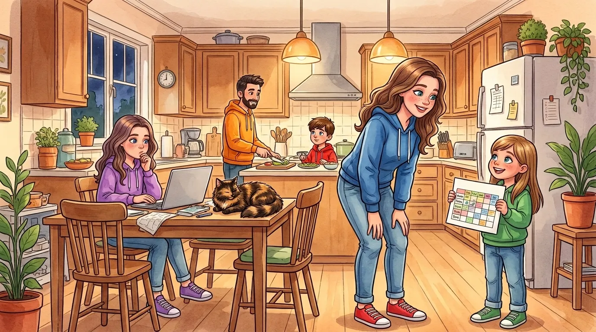
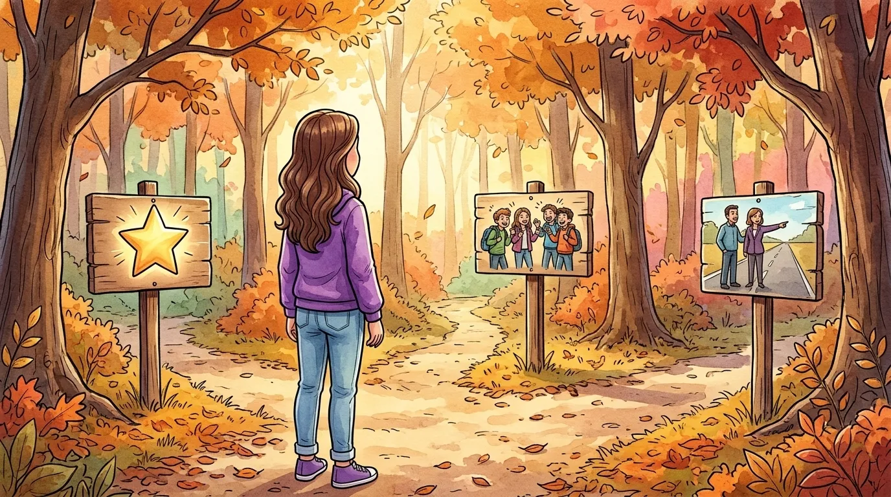
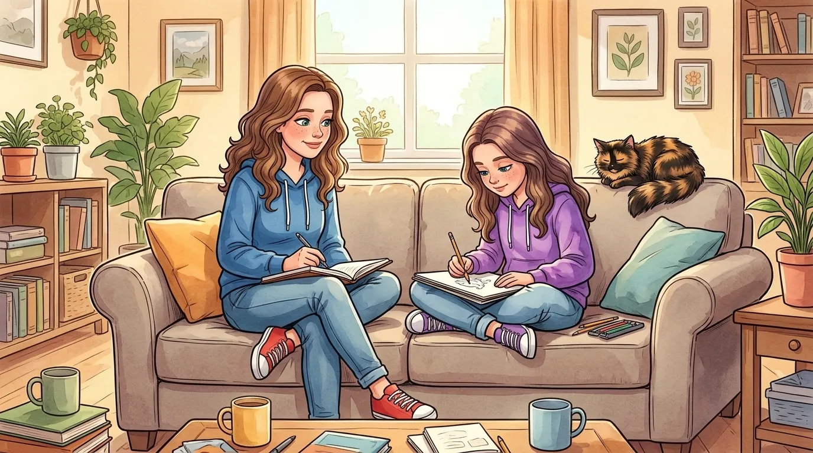
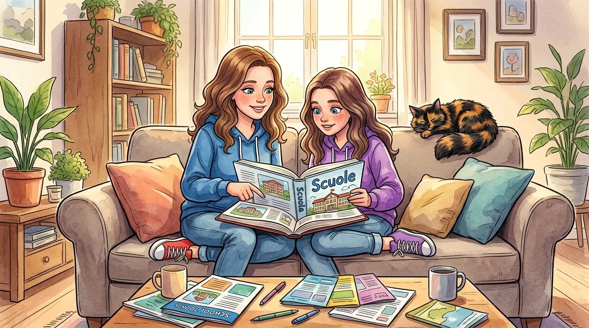
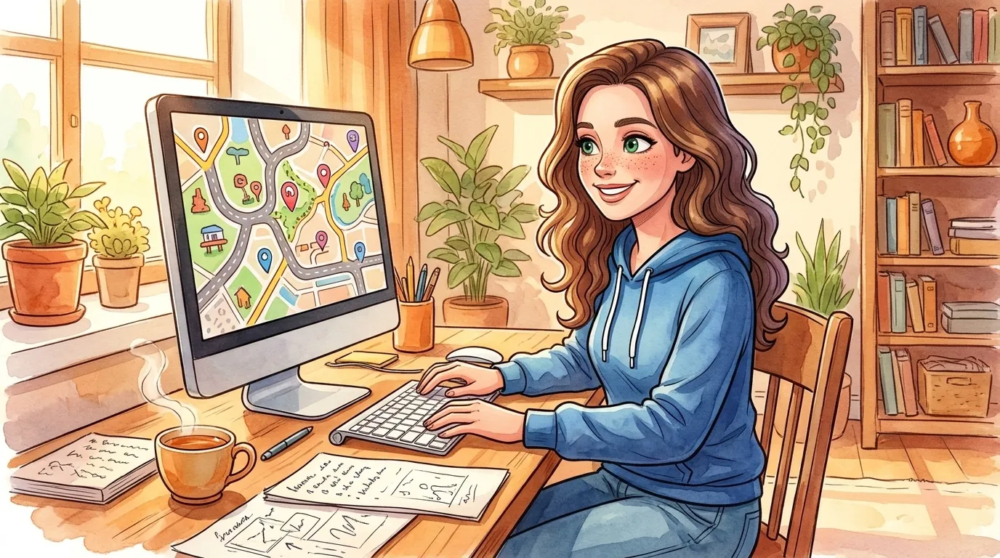

A casa nostra, in questo periodo, si parla parecchio di scuole superiori. E la cosa buffa è che a parlarne di più è quella che fa la quinta elementare.
Ginevra ha già deciso. Sa qual è la sua "scuola dei grandi", la sogna, e mi ha già chiesto di guardare insieme quante ore farà di ogni materia. Le mancano tre anni buoni, ma lei l'orario lo vuole vedere adesso.
Sua sorella grande fa la seconda media, quindi alla scelta è molto più vicina. Ed è indecisa: in testa ha più di una strada, e fa un sacco di domande.
Due figlie, due modi opposti di guardare avanti. E io in mezzo, che cerco di non frenare una e di non mettere fretta all'altra.

Si comincia presto
Oggi i ragazzi vengono spinti a scegliere prestissimo, già in seconda media. Per me è presto, eccome. Ma è così, e far finta di niente non aiuta nessuno.
A casa nostra, per fortuna, a spingere non è nessuno: sono loro che chiedono. E quando un figlio chiede, io voglio arrivarci preparata.
I tre inciampi che vedo più spesso
Ho fatto doposcuola per anni, seduta ai tavoli di cucina degli altri, e di scelte ne ho viste fare tante. Gli inciampi sono sempre quelli. Te li dico in ordine, dal più frequente.
La scuola dei voti. "Sei bravo, fai il liceo." La sento dire di continuo, e ogni volta mi mordo la lingua. La pagella dice come è andato un ragazzo in tre anni di medie. Di quello che gli piace fare non dice una parola.
La scuola degli amici. A quell'età gli amici sono la metà esatta di tutto il tuo mondo, e lo capisco benissimo che uno voglia andare dove vanno loro. Solo che gli amici te li porti dietro anche da un'altra scuola. Il latino no: quello te lo ritrovi lì tutte le mattine.
La scuola dei genitori. È quella che piace a mamma e papà, o quella che hanno fatto loro. Oppure quella che avrebbero voluto fare, e che adesso, guarda caso, sembra perfetta per il figlio. Qui la mano sul fuoco non la metto nemmeno per me: se non sto attenta ci casco anch'io.

Io parto da lei
Prima delle scuole guardo mia figlia. Che cosa le piace. Come impara. Che cosa la accende, e che cosa la spegne. Quando perde la cognizione del tempo, e quando invece guarda l'orologio ogni tre minuti.
È lo stesso lavoro che faccio quando preparo un materiale: prima capisco com'è fatto chi ho davanti, poi scelgo lo strumento. Con le scuole per me vale uguale. Prima lei, poi l'elenco degli indirizzi.

Per adesso, a casa nostra
La grande è indecisa, e a me va benissimo così: vuol dire che più di una cosa la accende. Non le chiedo di decidere adesso. Guardiamo, chiediamo, proviamo a immaginarla in un posto e poi in un altro. Io ascolto, e provo a tenermi le mie opinioni in tasca. Ci riesco a giorni alterni.
E la piccola? La piccola ha il suo orario delle materie, e guai a chi glielo tocca. Fra tre anni vedremo se la scuola dei sogni sarà ancora quella. Intanto sogna, e fa bene.

Una cosa che sto preparando
A forza di ragionarci mi è venuta voglia di costruire qualcosa, e ci sto lavorando. È un quiz per i ragazzi, gratuito, per aiutarli a capire quali scuole gli somigliano.
Non darà una risposta sola, perché i ragazzi sono fatti di tante sfaccettature. Appena è pronto te lo racconto per bene.

La domanda di oggi: tu come hai scelto la tua scuola? E chi ha scelto, davvero?
A presto!